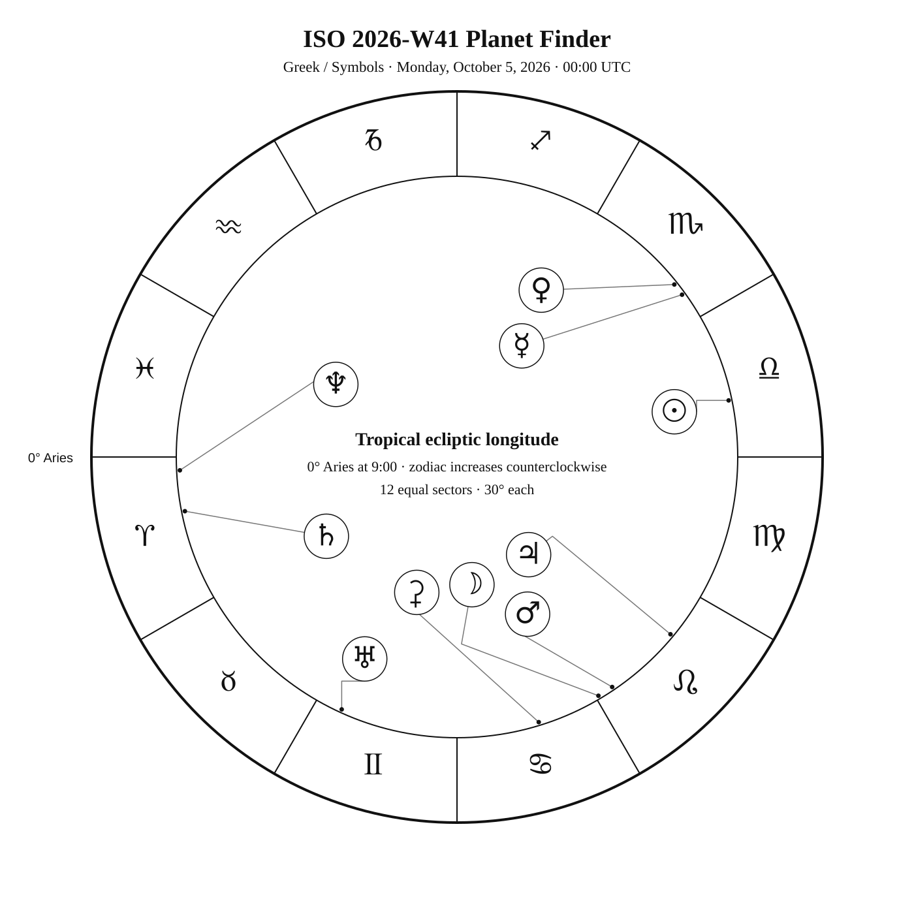
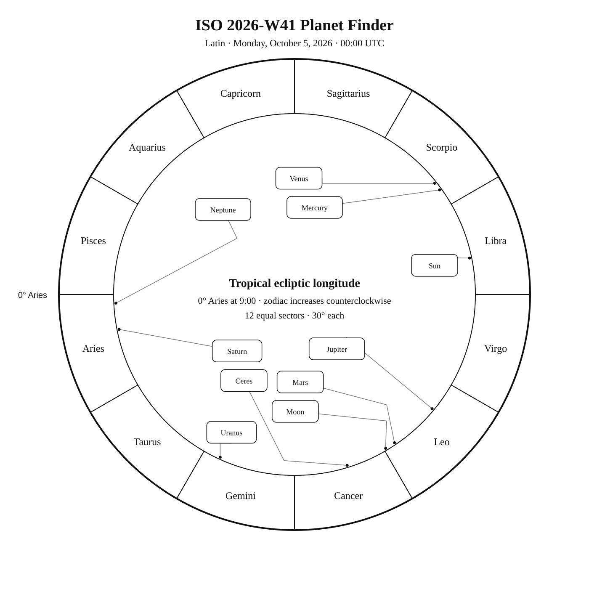
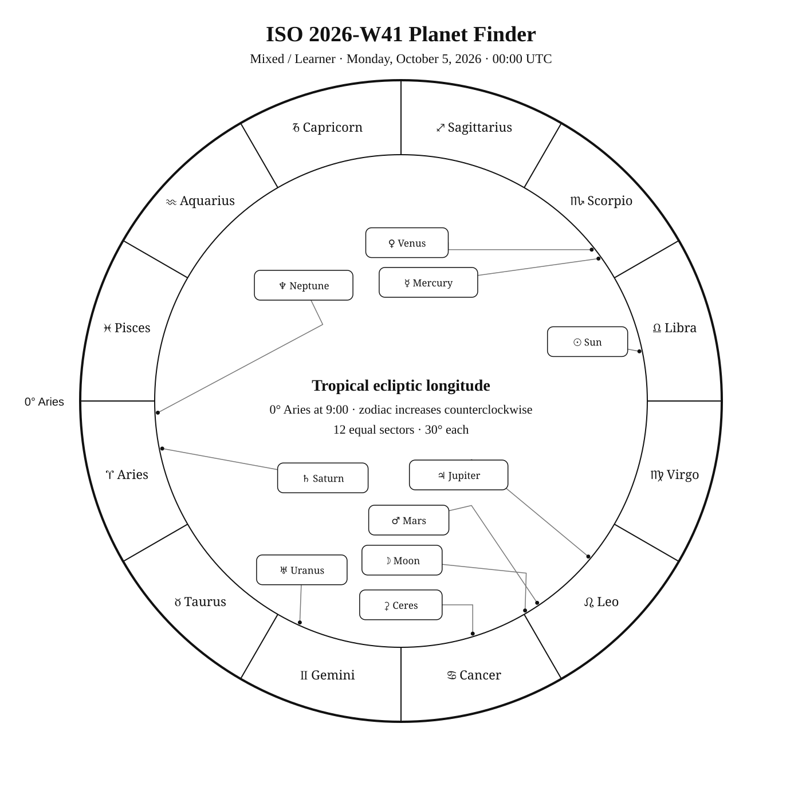

ISO 2026-W41
ISO dates: 2026-W41-1 through 2026-W41-7
Civil dates: Oct 5, 2026 – Oct 11, 2026
Calendar
| Date | Zodiac day | Events |
|---|---|---|
| Mon, Oct 5, 2026 | ♎ 13 | Enif (ε Peg) —  V 2 — Tropical Autumn V 2 — Tropical AutumnNGC 7129, Small Cluster Nebula, reflection nebula in Cep —  V 11.5 — Finest NGC — Northern Autumn V 11.5 — Finest NGC — Northern Autumn |
| Tue, Oct 6, 2026 | ♎ 14 | |
| Wed, Oct 7, 2026 | ♎ 15 | |
| Thu, Oct 8, 2026 | ♎ 16 | C19, IC 5146, Cocoon Nebula, bright nebula in Cygnus — V 10.0 — Northern Autumn |
| Fri, Oct 9, 2026 | ♎ 17 | |
| Sat, Oct 10, 2026 | ♎ 18 | 🌑 New Moon — 15:50:05 UTC |
| Sun, Oct 11, 2026 | ♎ 19 | Sadalmelik (α Aqr) — V 3 — Tropical Autumn |
Weekly Solar-System Ephemeris
Snapshot: October 5, 2026 · 00:00 UTC
(−90° to +90°; default +45°)
| Body | ☉︎ | ☽︎ | ☿︎ | ♀︎ | ♂︎ | ♃︎ | ♄︎ |
|---|---|---|---|---|---|---|---|
| Ecliptic | ♎︎ 11°46′ β +0°00′ | ♌︎ 0°38′ β +2°28′ | ♏︎ 5°48′ β −2°12′ | ♏︎ 8°26′ β −7°22′ | ♌︎ 4°00′ β +1°05′ | ♌︎ 20°18′ β +0°36′ | ♈︎ 11°16′ β −2°43′ |
| Observing | ☉︎ | | | | | | |
| Rise | 06:13 | 23:48 | 08:28 | 08:58 | 00:12 | 01:41 | 17:52 |
| Set | 17:47 | 15:12 | 18:27 | 18:03 | 15:14 | 15:56 | 06:13 |
Extended targets:
| Body | ⚳︎ | ♅︎ | ♆︎ | ♇︎ |
|---|---|---|---|---|
| Ecliptic | ♋︎ 17°08′ β +0°54′ | ♊︎ 5°27′ β −0°09′ | ♈︎ 2°45′ β −1°25′ | ♒︎ 3°06′ β −4°17′ |
| Observing | |  | | |
| Rise | 22:45 | 19:57 | 17:27 | 15:23 |
| Set | 14:17 | 11:05 | 05:31 | 00:02 |
β = ecliptic latitude (+ north, − south). Rise and set are Local Apparent Time for the selected latitude. Naked-eye classification becomes Daylight when the Sun is above the horizon at 21:00 LAT, and Solar Glare when the Sun is below the horizon but the body is too close to the Sun. The Sun uses glyph ☉ and text Visible.
Planet Finder



Sky Note
ISO 2026-W41 runs from October 5 through October 11. Fixed-sky highlights include Enif — is a bright fixed-sky reference in Pegasus — uses the preserved Martz/MacRobert stick figure (4 figure paths). with representative visual magnitude 2.38. Start at the Great Square of Pegasus and work west to Enif, the only nearby 2nd-magnitude star; it sits near the lower-right corner of an imagined second square.. Mercury and Venus are separated by about 2.6° in geocentric ecliptic longitude at the Monday 00:00 UTC snapshot. Uranus is about 4.3° in ecliptic longitude from Aldebaran — is a bright fixed-sky reference in Taurus — organizes the week’s fixed-sky objects and finder geometry. with representative visual magnitude 0.87. It helps form the observer-facing Hyades / V of Taurus and Winter Hexagon / Winter Circle. Use Orion's three Belt stars as a pointer westward toward orange Aldebaran and the Hyades V. in Taurus.
Naked eye: 🌑 New Moon — 15:50:05 UTC. The dark Moon favors faint targets and extended star fields. Use Enif as the week’s fixed-sky framework.
Planets: Mercury and Venus are separated by about 2.6° in geocentric ecliptic longitude at the Monday 00:00 UTC snapshot. Uranus is about 4.3° in ecliptic longitude from Aldebaran in Taurus.
Binoculars: Favor Enif; wide fields help connect the charted geometry to the real sky.
Small telescope: Concentrate on the compact fixed-sky targets selected for the week. Increase magnification only after the target and surrounding pattern are secure. Related machine-readable descriptors include Mercury, Venus, Uranus, ecliptic longitude, Naked eye, and Binoculars.
The artwork workflow will render this descriptor only from accepted Star Almanack geometry.
Chart
ISO2026-W41-chart.png — chart slot.